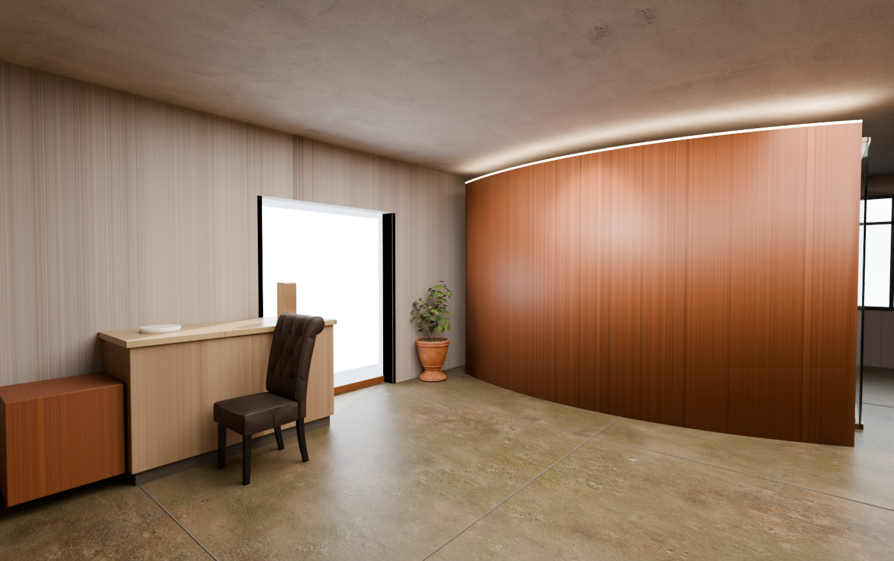
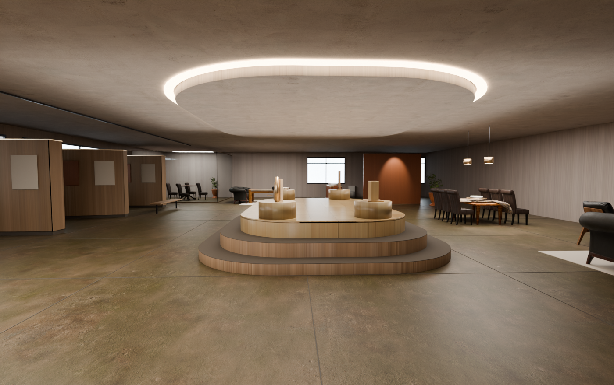
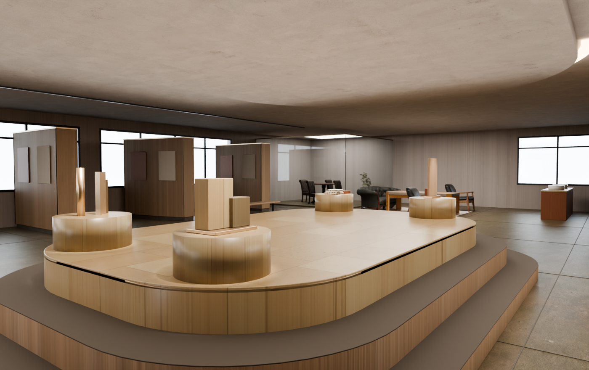
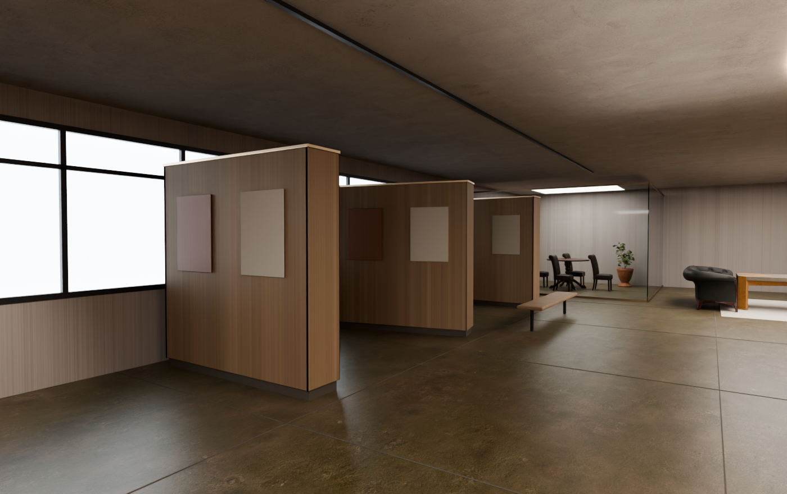
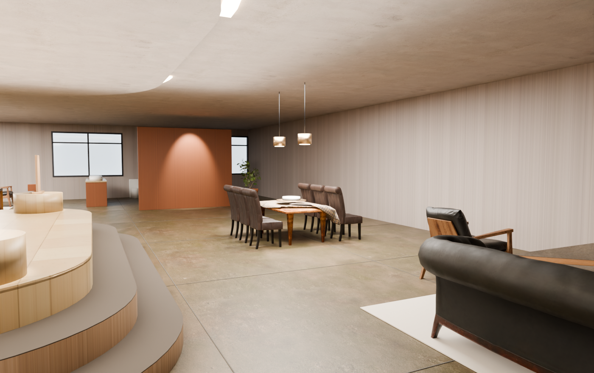
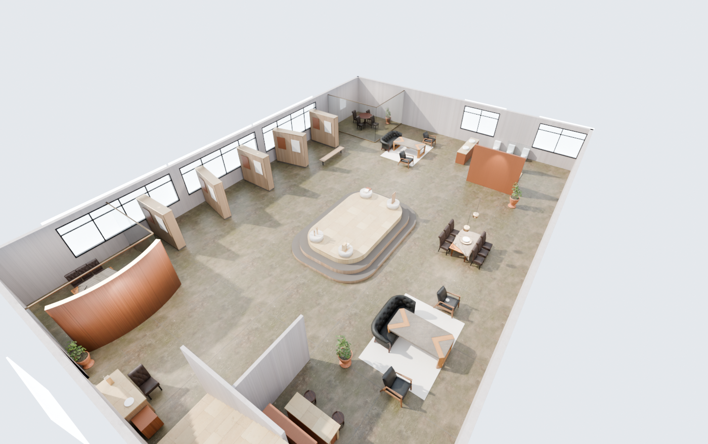
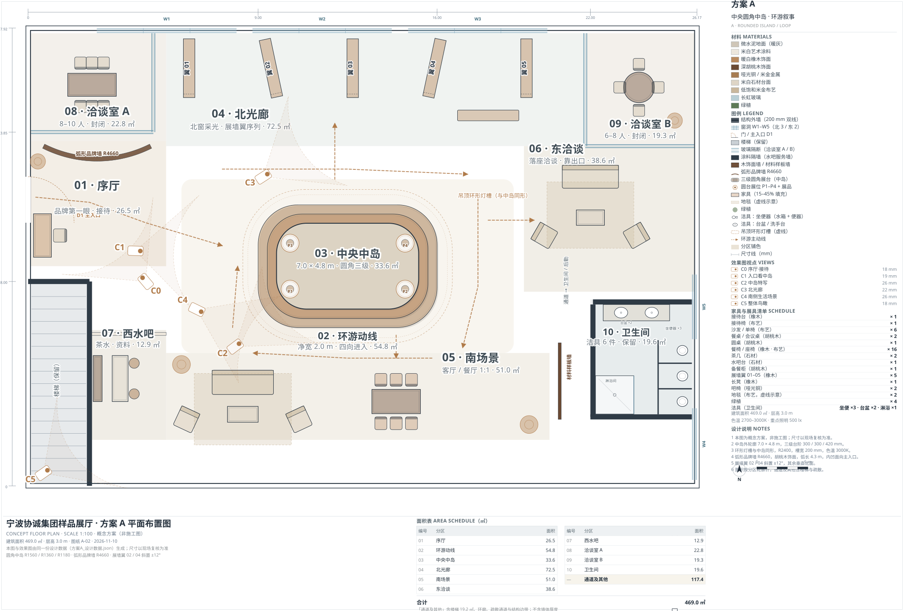

中央环岛 · 环游叙事 · 概念方案（非施工图）· 2026-11-10 · 场地 26.17 × 17.92 m / 层高 3.0 m






| 编号 | 画面 | 机位 x, y（m） | 朝向 x, y（m） | 焦距 | 光线 | 光怎么打 |
|---|---|---|---|---|---|---|
| C0 | 序厅·接待 | 4.60, 8.00 | 0.90, 12.40 | 18 | 上午自然光 | 上午自然光斜射进来，接待台上有台灯作为暖色补点。 |
| C1 | 入口看中岛 | 4.20, 9.20 | 11.40, 8.90 | 19 | 上午自然光 | 同一时刻的上午光，与 C0 保持一致，方便对照。 |
| C2 | 中岛特写 | 8.10, 5.45 | 12.60, 8.80 | 26 | 正午偏亮 | 正午偏亮的日光，灯槽与轨道射灯全开，重点照明压住台面。 |
| C3 | 北光廊 | 9.20, 12.10 | 16.80, 17.10 | 22 | 下午斜阳 | 下午斜阳，太阳高度角压低，窗光在地面拉出长投影，室内灯只留轨道射灯。 |
| C4 | 南侧生活场景 | 6.60, 6.90 | 15.60, 2.60 | 26 | 傍晚暖光 | 傍晚暖光：室外降到暮色，吊灯、灯槽、筒灯成为主光，色温 2700K。 |
| C5 | 整体鸟瞰 | 0.60, 0.50 | 13.10, 9.20 | 18 | 日景鸟瞰 | 日景鸟瞰：天光为主，室内灯开一半，只看布局关系不看氛围。 |
为什么有 6 张而不是 5 张：接待台与中岛分处入口两侧（约 140° 夹角），任何单张直线透视都装不下，所以把“序厅”单独拆成 C0，C1 专注“入口看中岛”。

| 编号 | 区域 | 面积（㎡） |
|---|---|---|
| 01 | 序厅 | 26.5 |
| 02 | 环游动线（环形） | 54.8 |
| 03 | 中央中岛 | 33.6 |
| 04 | 北光廊 | 72.5 |
| 05 | 南场景 | 51.0 |
| 06 | 东洽谈 | 38.6 |
| 07 | 西水吧 | 12.9 |
| 08 | 洽谈室 A | 22.8 |
| 09 | 洽谈室 B | 19.3 |
| 10 | 卫生间 | 19.6 |
| — | 通道及其他 | 117.4 |
| — | 合计 | 469.0 |
| — | 场地外包 26.17 × 17.92 | 469.0 |
| 材料 | 用在哪 |
|---|---|
| 微水泥地面（暖灰） | 地面 |
| 米白艺术涂料 | 墙面 / 天花 |
| 暖白橡木饰面 | 中岛台体、展墙翼、家具 |
| 深胡桃木饰面 | 弧形品牌墙、接待台背板 |
| 哑光铜 / 米金金属 | 灯具、五金、展品底座 |
| 米白石材台面 | 中岛顶层台面 |
| 低饱和米金布艺 | 沙发、单椅、窗帘 |
| 长虹玻璃 | 洽谈室隔断 |
| 绿植 | 光廊与场景角落 |
材料色块与渲染里的贴图出自同一份数据 + 同一套 CC0 贴图，改一处三处同步。
| 用途 | 素材 ID | 名称 | 来源 | 作者 | 授权 |
|---|---|---|---|---|---|
| floor_microcement | white_plaster_rough_01 | White Plaster Rough 01 | polyhaven.com/a/white_plaster_rough_01 | All | CC0 1.0 |
| wall_plaster | painted_plaster_wall | Painted Plaster Wall | polyhaven.com/a/painted_plaster_wall | All | CC0 1.0 |
| oak | white_oak_veneer | White Oak Veneer | polyhaven.com/a/white_oak_veneer | All | CC0 1.0 |
| walnut | rosewood_veneer_02 | Rosewood Veneer 02 | polyhaven.com/a/rosewood_veneer_02 | All | CC0 1.0 |
| stone | marble_01 | Marble 01 | polyhaven.com/a/marble_01 | All | CC0 1.0 |
| fabric | wool_boucle | Wool Boucle | polyhaven.com/a/wool_boucle | Photography, Processing | CC0 1.0 |
| 用途 | 名称 | 来源 | 作者 | 授权 |
|---|---|---|---|---|
| sofa_02 | Sofa 02 | polyhaven.com/a/sofa_02 | All | CC0 1.0 |
| modern_arm_chair_01 | Modern Arm Chair 01 | polyhaven.com/a/modern_arm_chair_01 | All | CC0 1.0 |
| modern_coffee_table_01 | Modern Coffee Table 01 | polyhaven.com/a/modern_coffee_table_01 | All | CC0 1.0 |
| dining_table | Dining Table | polyhaven.com/a/dining_table | All | CC0 1.0 |
| dining_chair_02 | Dining Chair 02 | polyhaven.com/a/dining_chair_02 | All | CC0 1.0 |
| potted_plant_01 | Potted Plant 01 | polyhaven.com/a/potted_plant_01 | All | CC0 1.0 |
| bar_chair_round_01 | Bar Chair Round 01 | polyhaven.com/a/bar_chair_round_01 | All | CC0 1.0 |
| round_wooden_table_01 | Round Wooden Table 01 | polyhaven.com/a/round_wooden_table_01 | All | CC0 1.0 |
| ceramic_vase_01 | Ceramic Vase 01 | polyhaven.com/a/ceramic_vase_01 | All | CC0 1.0 |
| wooden_bowl_01 | Wooden Bowl 01 | polyhaven.com/a/wooden_bowl_01 | All | CC0 1.0 |
下载脚本 scripts/fetch_cc0_assets.py；文件存在 tools/assets/（不进版本库），来源与 SHA-256 记在 assets/CC0-素材清单.json（进版本库）。
示意图：项目资料（施工图 / 预算 / 现场照片）里没有协诚的产品清单，四组展台按本项目主材做成可辨认的样品——石材样块、木饰面板样、金属型材段、织物样册；不是协诚真实展品，等产品资料到位后再替换。
依据：施工图 DWG/PDF、装修预算 xls、3 张现场照片里都没有出现协诚的产品清单或样品照片；现场照片是毛坯状态。因此不做“猜产品”，改为按本项目主材做四组可辨认的样品。
做到了：6 个机位、5 套光线（上午 / 正午 / 下午斜阳 / 傍晚 / 日景鸟瞰）；6 套 CC0 PBR 贴图（木饰面、石材、微水泥、布艺、乳胶漆、胡桃木）与 10 件 CC0 家具模型；地面 3 m 分缝、90 mm 踢脚、墙顶 20 mm 阴影缝；玻璃隔断改成细铜框；接待台改为实体前台；补出保留楼梯；四组样品重做；相机位置与朝向写进 方案A_设计数据.json 并画在平面图上。
仍然不像设计公司成果的地方：
结论：这一版比第 2 版在“看得懂”上前进了一大步（六个功能区各自成立、光线有区别、材质是真实贴图），但仍不是客户交付级。我不把它算通过。